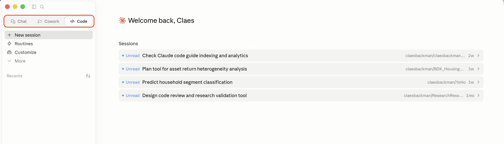

A Quick Tour
VS Code, terminal, desktop, web, mobile — six surfaces, one decision
Claude Code and Codex are the two main agentic AI systems for everyday research work. Both can read your files, run code, edit drafts, and iterate on a task until it's done. There are several different programs you can use to get started with agentic AI. The goal of this page is to help you navigate the different options. For a side-by-side comparison of the two systems themselves, see Codex vs Claude Code.
For installation guides for agentic AI in VS Code, see Claude Code and Codex.
Surface 1
VS Code is an editor where you can write and run code, work in LaTeX, and keep your project files in view. Both Claude Code and Codex ship official VS Code extensions, where the AI sits in a side panel, sees the file you have open, can edit anywhere in the project, run code, view tables and figures, and inspect diffs before you accept them. If you want to see your files in the same editor, this is the surface to start with.
There is a learning curve to VS Code. The two guides on this site walk through that first day specifically for empirical research: Claude Code in VS Code and Codex in VS Code.
Surface 2
Both systems also run as command-line tools: claude and codex in any shell. You point the CLI at a folder, describe what you want, and it edits files in place. Under the hood this is the same as the VS Code version, just without the editor wrapper. This is the natural fit for anyone already working in a terminal: cluster jobs, remote servers via SSH, headless scripts, or workflows that pipe AI calls into other tools.
Two practical cases where the CLI wins over VS Code:
Official docs: Claude Code CLI · Codex CLI.
Surface 3
The Claude desktop app (Mac and Windows) and the ChatGPT desktop app are the chat-style interfaces most people first encounter. Claude Desktop now also has Cowork and Code tabs: Cowork for longer background tasks, and Code for starting a Claude Code session on a folder or repo.

OpenAI also ships a dedicated Codex desktop app. It is closer to Claude's Code tab than to ordinary chat: it is built for working on coding threads in parallel, reviewing diffs, and managing Git-backed changes. Desktop apps are useful when you want a focused AI workspace without living inside VS Code or the terminal.
For quick conversations and drafting, the ordinary Claude or ChatGPT chat surface remains easiest. For sustained editing, use the Code/Codex desktop surfaces or an IDE; the chat-only surfaces are the ones that become hard to track once many files and diffs are involved.
Surface 4
For ordinary chat, the browser versions at claude.ai and chatgpt.com are close to the desktop chat apps. The exception worth knowing about is that both vendors now run long-running cloud agents from the web — claude.ai/code and chatgpt.com/codex. You point them at a GitHub repository, describe the task, and the agent works in a cloud container for minutes or hours before pushing a branch or opening a pull request you can review and merge.
Cloud agents are useful in three situations: when your work laptop blocks software installs (common at central banks and statistical agencies), when you want to kick off a job from a borrowed machine, and when you want several independent attempts at the same task running in parallel. They are not useful when the data lives only on your laptop or inside a secure environment — the cloud agent can't see it.
Surface 5
Claude and ChatGPT both have iOS and Android apps. You will not edit a Stata script on a phone. But two patterns work well: capture — dictate an idea, a literature note, or a draft paragraph while walking — and monitor — kick off a cloud agent from your laptop in the morning, then approve or redirect it from your phone over coffee. Voice input on either app is good enough that talking through a paper's argument and getting structured notes back is now genuinely practical.
The mobile apps also pair with the cloud agents above: you can review a pull request, leave a comment, and ask the agent to revise, all without opening a laptop.
Surface 6
If you already work in another editor, you don't have to switch to VS Code. Cursor is a VS Code fork built around AI from the ground up; JetBrains IDEs (PyCharm, IntelliJ IDEA, WebStorm, etc.) have first-party Claude Code and Codex integrations; and Zed is a fast editor where you can run the CLIs from the integrated terminal. The agentic experience is broadly similar in Cursor and JetBrains, while Zed is closer to the terminal workflow.
Practically: if you live in PyCharm for Python work or already use Cursor for a side project, you can keep your editor and add Claude Code or Codex on top. If you use Zed, start with claude or codex in the project root. If you have no strong preference, VS Code remains the path of least resistance — it is what most documentation, screenshots, and shared workflows assume.
Decision aid
A rough cheat sheet. None of the surfaces are mutually exclusive — most researchers end up using two or three, picking whichever fits the moment.